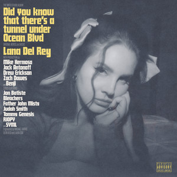

About the Album
"Did You Know That There's a Tunnel Under Ocean Blvd" is Lana Del Rey's ninth studio album, released in 2023. Sprawling and intimate, it moves between gospel choirs, stripped-back piano ballads and experimental interludes while reflecting on family, faith, legacy and mortality. Featuring collaborations with Jon Batiste, Father John Misty and Bleachers, it earned Grammy nominations including Album of the Year.
Tracklist
- The Grants
- Did You Know That There's a Tunnel Under Ocean Blvd
- Sweet
- A&W
- Judah Smith Interlude
- Candy Necklace
- Jon Batiste Interlude
- Kintsugi
- Fingertips
- Paris, Texas
- Grandfather Please Stand on the Shoulders of My Father While He's Deep-Sea Fishing
- Let the Light In
- Margaret
- Fishtail
- Peppers
- Taco Truck x VB